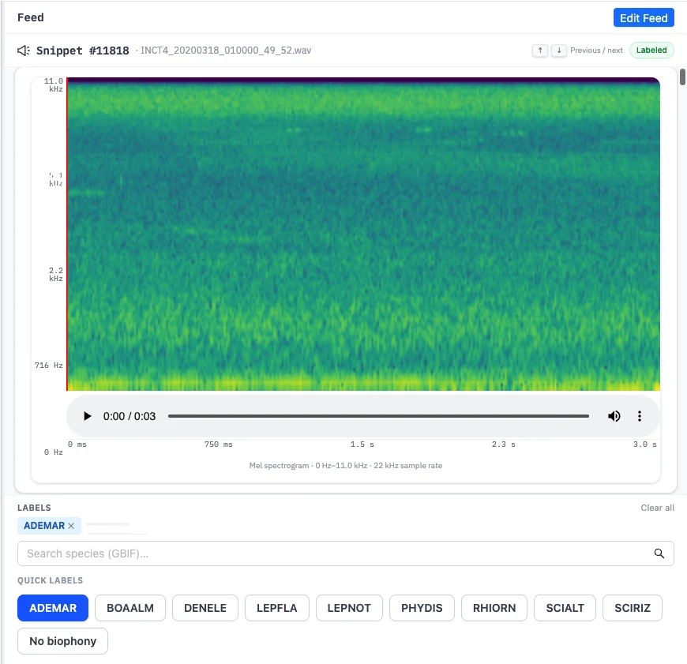
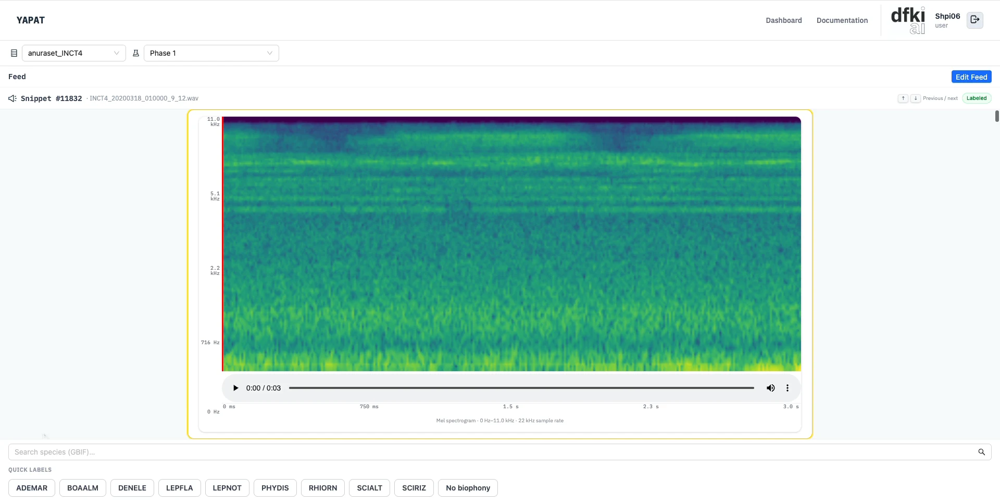
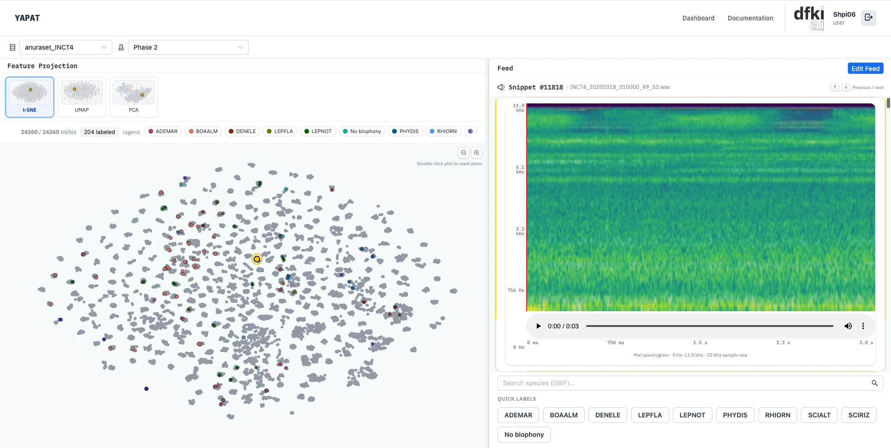
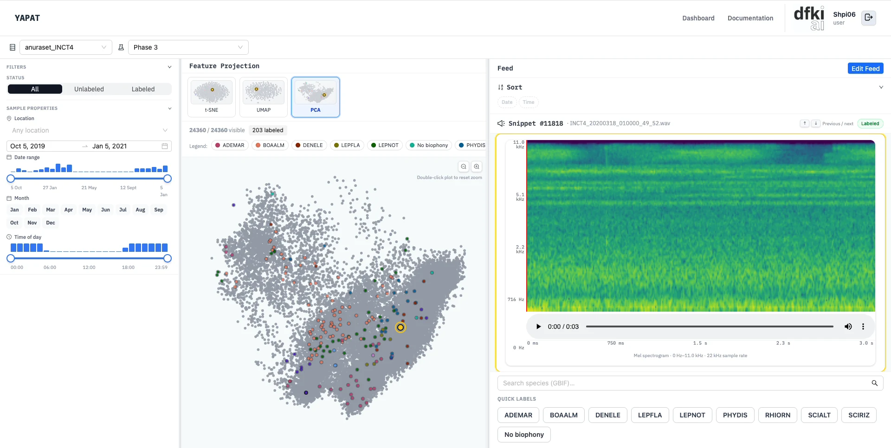
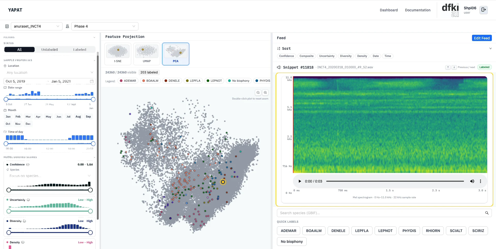
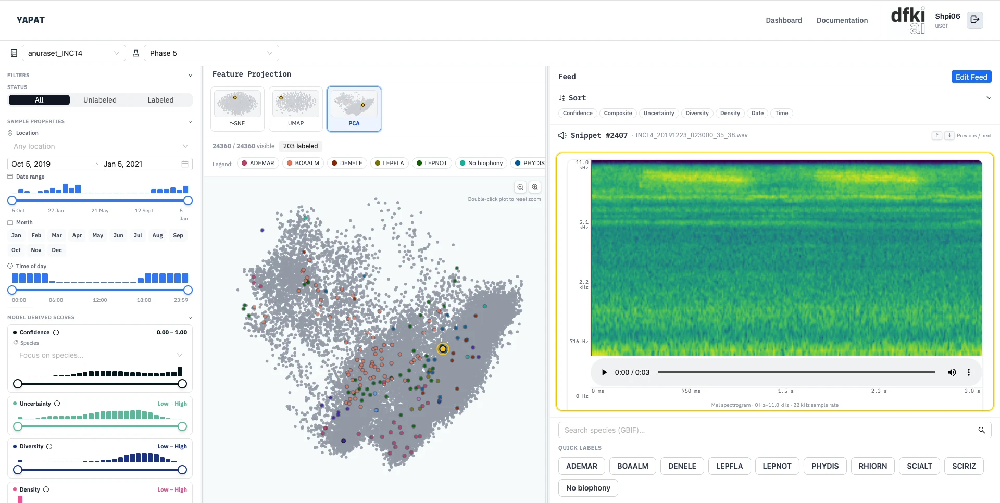
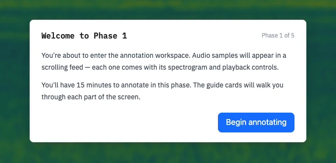

Annotation Hub
The Annotation Hub is where you label audio. YAPAT shows you the clips its model is least sure about, you choose the labels, and the model learns from every answer you give.
You need: a dataset with embeddings. See Datasets.
Steps
- Open Start Annotating on the Dashboard, or Active Learning on a dataset card.
- Choose the dataset in the toolbar, then click Generate Feed at the top right of the feed.
- On each clip, look at the spectrogram, play the audio, and choose one or more labels.
- Move on to the next clip. Your labels are saved automatically.

Generating a feed
Generate Feed (or Edit Feed) opens one dialog. The first time you use a dataset there is no model yet, so the dialog asks for a model name and how to start:
- Bootstrap mode — start with randomly chosen clips. The first model is trained from your labels. This is the usual choice.
- Cold start — train a first model from existing ground-truth labels. Only administrators and team owners can do this.
Once a model exists, the dialog only sets how many clips the feed shows (Top-K, 1 to 500).
Labelling a clip
Choose labels from the quick-label list, or search the Global Biodiversity Information Facility (GBIF) for a species that is not in the list; a species you pick from the search is added to your own quick labels. A clip can have several labels.
The model's own guess is never shown on the clip. This keeps your answer independent, so every stored label is one a person chose. See Active Learning.
- Press ↑ and ↓, or the arrows next to the clip name, to move to the previous or next clip.
- Remove one label with its ×, or all of a clip's labels with Clear all.
- A labelled clip shows a Labeled badge next to its file name.
- Use No biophony when you hear no animal sound at all. YAPAT treats it as "none of the target species", so the model learns from it without turning it into a species.
- Edit Feed reopens the feed settings, for example to show more clips.
The model retrains on its own
After every 10 labels, YAPAT retrains the model in the background and refreshes the feed with the new ranking. There is nothing to click.
Phases
The Hub can introduce its tools step by step. The phase selector in the toolbar switches between five phases:
| Phase | What you see |
|---|---|
| 1 | The feed of clips only. |
| 2 | Adds the projection: a map of all clips in the dataset, where similar sounds sit close together. |
| 3 | Adds the sidebar filters: labelled or unlabelled, location, date, and time. |
| 4 | Adds the model scores as filters, and sorting of the feed. |
| 5 | Everything in phase 4; clicking a point in the projection opens that clip. |





The projection
From phase 2, the projection shows every clip of the dataset as a point; clips that sound alike sit close together. Coloured points are labelled clips, and the legend shows which colour belongs to which label. The buttons above it switch between three standard methods for drawing the clips on a flat map: t-distributed stochastic neighbor embedding (t-SNE), Uniform Manifold Approximation and Projection (UMAP), and principal component analysis (PCA). Zoom with the + and − buttons, and double-click to reset the zoom. The ring marks the clip open in the feed.
Guided sessions and study logs
For guided sessions, such as introducing new annotators or running a study, each phase can open with a Welcome to Phase N introduction and a short tour of guide cards that point out what is new. Click Begin annotating to start. The introduction mentions a time per phase, but YAPAT does not enforce it: there is no countdown, and you move to another phase with the phase selector.

YAPAT can also record interactions such as label choices, playback, and filter changes. Administrators review them under Study Logs on the Dashboard: first a list of participants, then each participant's sessions, then the timeline of events in a session, which can be downloaded as comma-separated values (CSV). Both features are switched on by the administrator.
- The Hub lives at
/annotate?dataset_id=<id>;&phase=P1…P5selects a phase. - Phases, the guided flow, and logging are set with
VITE_STUDY_*variables; a deployment can lock the phase. See Environment Setup. /annotate?study_reset=1clears the guided flow's progress stored in the browser.- The retrain threshold is
RETRAIN_AFTERin the backend'sactive_learning/config.yaml. - Endpoints: Active Learning API.